地政学
マナウスはアマゾン川水系の奥でブラジル北部を束ね、国境地帯、森林保全、資源開発、先住民政策、港湾物流を結ぶ州都です。首都から遠い位置こそが、国家が森と川をどう守るかを映し、水路も主権の要になります。

🇧🇷 ブラジル / アマゾナス州 / World City Atlas
アマゾン川水系の奥にあるブラジル北部の大都市です。熱帯雨林の縁で、自由貿易区、港湾物流、先住民と移住、ゴム景気の記憶、環境破壊、暑熱と洪水、川の食文化、森への観光が重なります。
都市の骨格
マナウスは海から遠いが、川によって世界市場と結ばれてきました。黒いネグロ川と褐色のソリモンエス川が近くで出会い、港、工場、移住者の住宅地、森への観光が同じ都市圏に圧縮されます。
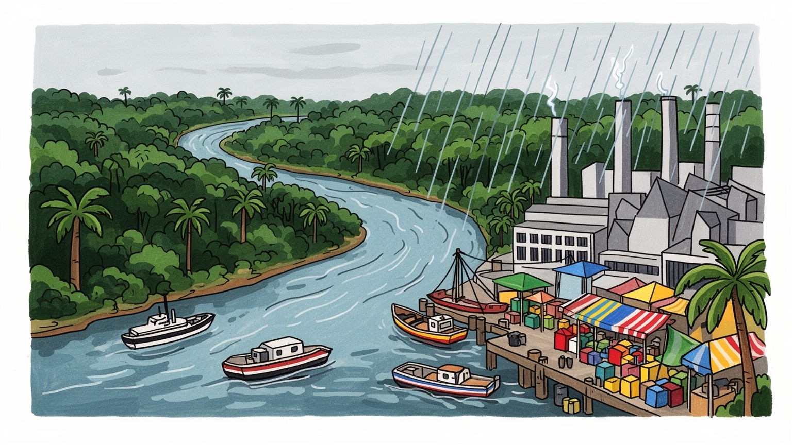
マナウスはアマゾン川水系の奥でブラジル北部を束ね、国境地帯、森林保全、資源開発、先住民政策、港湾物流を結ぶ州都です。首都から遠い位置こそが、国家が森と川をどう守るかを映し、水路も主権の要になります。
自由貿易区は電機、二輪、情報機器、飲料、物流の雇用を生み、港と空港が部品と製品を動かします。工場、倉庫、商店、屋台、学校、大学が重なり、税制優遇への依存も経済の不安になります。技能形成が焦点です。
先住民、リベイリーニョ、北東部からの移住者、欧州系の記憶が混じり、カトリック、福音派、音楽、祭礼、サッカー、魚料理、市場の声が都市文化を厚くします。森と川への敬意も日常に残ります。祈りも結びます。
観光客は劇場、市場、二河川合流、川船、熱帯雨林ロッジを巡りますが、住民は暑熱、洪水、交通、治安、住宅の不足にも向き合います。水位の変化は通勤、物価、衛生、学校、買い物まで左右し、日常を形づくります。
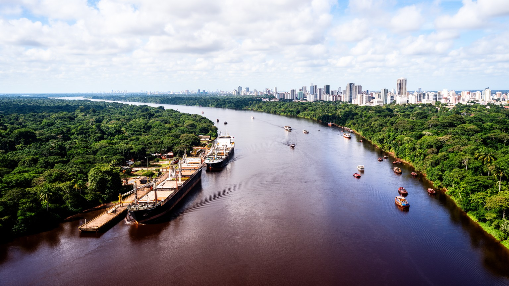
マナウスは海から遠い内陸都市でありながら、川によって外部世界と結ばれてきました。ネグロ川の黒い水とソリモンエス川の褐色の水が近郊で並んで流れ、やがてアマゾン川として大西洋へ向かいます。この水路は道路より古い交通軸で、燃料、食料、工業部品、木材、魚、人の移動を支え、ブラジル北部の州都を国境地帯や小さな河岸集落へつなぎます。地図上では孤立して見えますが、川船の時間で見ればマナウスは広大な水域の中心です。国家にとっては、森林保全、鉱物資源、違法伐採、麻薬取引、先住民領域、国境管理を同時に扱う前線でもあります。首都ブラジリアから離れていることは周縁性であると同時に、アマゾンを統治する現場に近いという政治的な重みを生みます。港、軍、大学、研究機関、環境行政、工場が集まるこの都市では、川の水位と国の政策が日常に直結します。船着き場の混雑、倉庫の荷、雨季の増水、乾季の座礁は、都市が自然条件にどれほど依存しているかを示します。水路が止まれば、市場の魚、工場の部品、病院への移送、学校へ通う子どもの道まで揺らぎます。地域ラジオ、港の掲示、携帯電話の連絡網は、水位、航路、治安、物価の情報を住民へ流します。アマゾンの地政学は遠い外交の話ではなく、毎朝の港と川岸で起きています。川を管理する力は、住民の安全と国家の主権を同時に支えます。
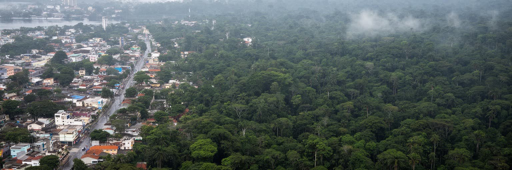
マナウスの都市経験は、熱帯雨林気候の強さから切り離せません。高温多湿の空気、急なスコール、濃い緑、虫の多さ、湿気で傷みやすい建物、雨季に膨らむ川は、街の歩き方から住宅の作り方まで左右します。森は観光パンフレットの背景ではなく、気温を調整し、水を循環させ、食料や薬草、先住民の知識、研究対象を支える生きたインフラです。しかし都市の拡大は周縁の森林を削り、道路沿いの宅地化、廃棄物、下水、違法な土地占有を通じて生態系に圧力をかけます。工場や港が雇用を生むほど、住宅需要も増え、森と市街地の境界は動き続けます。強い日差しと湿気は屋外労働者、通学する子ども、高齢者に負担をかけ、冷房を使える家と使えない家の差も広げます。夕方のサッカー場、川辺の散歩、屋台の椅子、ショッピングモールの涼しさは、暑さを避けながら人が集まる居場所でもあります。マナウスでは、都市計画が気候政策であり、排水、樹木、公共交通、住宅の質が健康政策でもあります。大雨の後に道路が冠水し、斜面や低地の住宅が損傷すると、自然災害と都市管理の境界は曖昧になります。熱帯雨林の都市とは、豊かな自然に囲まれた快適な場所という意味ではありません。森の機能に支えられながら、その森を消費して拡大する矛盾を抱えた都市です。緑地の残し方、河岸の使い方、住宅地の排水は、毎日の健康を決める実務でもあります。湿った空気の中で暮らす知恵も、都市文化の一部になっています。
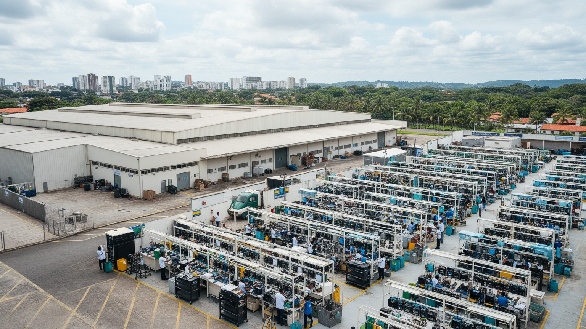
マナウス自由貿易区は、都市の現代史を決定づけた制度です。ブラジル政府はアマゾン地域の開発と国土統合を目的に税制優遇を与え、電機、二輪、情報機器、空調、飲料、化学、玩具などの工場を誘致しました。部品は港や空港を通って入り、組み立てられた製品はブラジル国内市場へ送られます。これにより、マナウスは一次産品だけに依存しない工業雇用を持つ都市になり、技術者、ライン労働者、倉庫作業員、警備、清掃、食堂、輸送の仕事が広がりました。一方で、この経済は税制と国内市場の変動に敏感で、優遇措置の見直しや景気後退は雇用不安に直結します。工業化は森林伐採を抑える代替開発として語られることもありますが、都市周縁の住宅拡大、道路交通、廃棄物、エネルギー消費を増やす側面もあります。自由貿易区を評価するには、雇用創出だけでなく、地域の技能形成、賃金、環境負荷、税収、サプライチェーンの脆さを同時に見る必要があります。工場の門を出た後の通勤時間や家賃、学校、病院も産業政策の結果です。連邦大学や州立大学、職業学校は、工場の技能、環境研究、医療、教育を担う人材を育てます。給与日には商店街や大型店、携帯ショップ、食堂が混み、工業賃金は買い物の流れにも現れます。森の中の工業都市という独自性は、制度が地理を変え、地理が制度の限界を示す場所にあります。研究、教育、物流改善、環境技術へ広げられるかが、自由貿易区の次の課題になります。
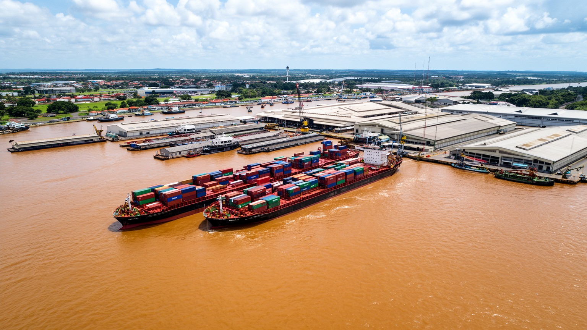
マナウスの港湾物流は、川の都市を工業都市に変える実務の心臓です。海港ではありませんが、大型船と川船、コンテナ、燃料、食料、工業部品、建材、冷蔵貨物が集まり、倉庫、通関、トラック、フェリー、港湾労働が都市の時間を決めています。自由貿易区の工場は精密な部品供給に依存し、遅延は生産ラインへすぐ影響します。住民の市場に並ぶ魚、果物、衣料、日用品も水路と道路の組み合わせで届きます。雨季には水位が上がり、乾季には川が浅くなるため、桟橋、航路、荷役、燃料費は自然条件に左右されます。港の周辺では、弁当売り、荷運び、修理、露店、タクシー、携帯充電、安宿が動き、公式の物流と街路経済が重なります。アマゾンの物流は単なる距離の問題ではなく、水位、流速、河岸の浸食、港の混雑、治安、気候変動を読む仕事です。港周辺には雇用が集まる一方、騒音、交通事故、排気、廃棄物、非公式な商いも集中します。マナウスの消費と工業は、華やかな都市中心部よりも、船着き場、倉庫、舗装の荒れた道路、夜明けの市場で支えられています。川が道路の役割を果たす地域では、物流の失敗は物価上昇や医療品不足として住民に現れます。コンテナと小舟が同じ水面を使う光景に、この都市の経済の二重性が表れています。荷役の遅れは、工場だけでなく家庭の食卓と診療所の棚にも届きます。港の働きを知るほど、都市の見えない依存関係が浮かび上がります。
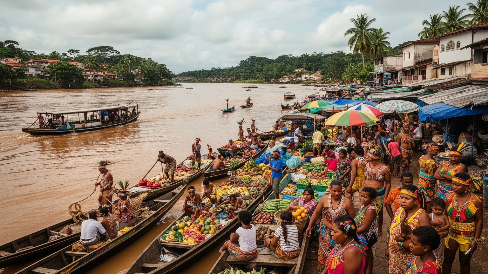
マナウスは先住民の土地に置かれた都市であり、同時に移住者の都市でもあります。トゥカノ、サテレ・マウェ、ムラ、ティクナをはじめとする多様な先住民の人びとは、森や川の知識、言語、工芸、食、儀礼を持ちながら、都市の学校、医療、労働市場、行政手続きと向き合っています。河岸集落から来たリベイリーニョ、ブラジル北東部や内陸からの移住者、自由貿易区の雇用を求めた家族も、住宅地、市場、教会、工場、大学で都市を作ってきました。移住は機会を広げますが、土地の権利、差別、低賃金、言語の壁、文化の商品化、周縁住宅の不安定さを伴います。カトリックの守護聖人の祭り、福音派の集会、先住民の儀礼、六月祭、川の行事は、出身の違う住民が都市の暦を共有する場になります。先住民文化は観光の飾りではなく、環境保全や医療、教育、政治参加をめぐる現在の知識体系です。市場や祭りでは、川魚、キャッサバ、果物、工芸品、音楽が都市の日常として売買されますが、その背後には故郷を離れた人びとの記憶と、森を守る権利をめぐる闘いがあります。大学で学ぶ若者、都市の集会で発言するリーダー、工芸を売る家族、病院へ通う高齢者は、マナウスが単一の近代都市ではないことを示しています。移住者の生活力と先住民の権利を同時に見なければ、この都市の社会は読めません。名前や言語が街で聞こえること自体が、権利の可視化でもあります。
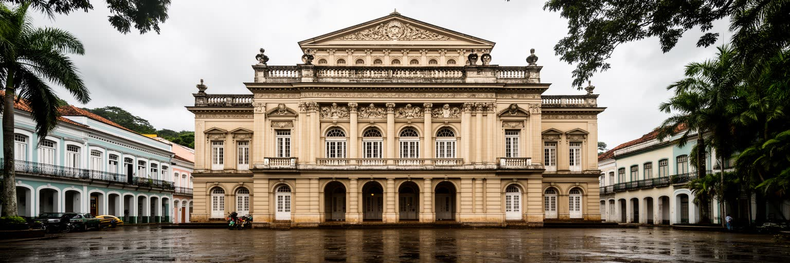
マナウスの中心部で最も象徴的な建物の一つがアマゾナス劇場です。十九世紀末から二十世紀初めのゴム景気は、熱帯雨林の樹液を世界市場へ送り、都市に富をもたらしました。欧州風の劇場、舗装、電灯、港湾施設は、森の奥に国際都市の夢を置いた時代の痕跡です。しかしその華やかさの背後には、先住民や河岸住民への暴力、過酷な採取労働、債務拘束、疫病、資源価格への依存がありました。アジアでのゴム栽培が広がると景気は急落し、都市は一時衰退しました。劇場を美しい観光名所として見るだけでは、資源ブームが生んだ不平等と脆さを見落とします。現在の自由貿易区にも、制度や市場に依存する都市経済という別の形の脆さがあります。ゴム景気の記憶は、過去の豪華さではなく、資源で急成長した都市が何を失い、何を残したのかを考える入口です。古い建築の修復、中心部の再生、音楽祭、劇場公演、夜のバーや広場の演奏は都市の誇りを支えますが、そこに労働と搾取の記憶を重ねることで歴史は立体的になります。地元紙、ラジオ、テレビ、SNSは劇場の催しから洪水、工場雇用、治安までを伝え、街の記憶を毎日更新します。劇場の舞台と森の採取現場は遠く離れていたようで、同じ経済で結ばれていました。マナウスの美しい遺産は、その結びつきを問い続けています。観光の拍手の奥に、採取地の沈黙を想像する視点が欠かせません。
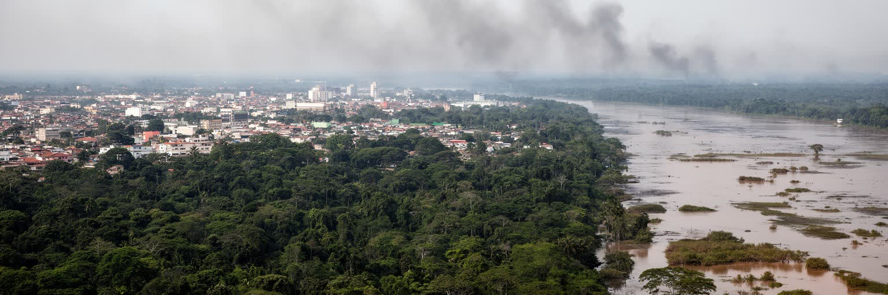
マナウスはアマゾン保全を語るうえで欠かせない都市ですが、同時に環境負荷を生む大都市でもあります。周辺の森林伐採、無秩序な宅地化、河川への下水流入、廃棄物処理の不足、道路建設、違法な土地取引は、都市の成長と深く結びつきます。乾季には森林火災や遠方の焼き払いによる煙が空を覆い、呼吸器疾患や学校生活、空港運航にも影響します。魚の減少や水質悪化は市場と食卓に届き、貧しい地区ほど衛生被害を受けやすいです。環境破壊は森の奥だけで起こるのではなく、都市の消費、住宅需要、エネルギー、物流、政治的な土地管理の結果として現れます。研究機関、市民団体、先住民組織、学校の環境教育は保全の知識を蓄積していますが、雇用不足や住宅不足がある限り、保全だけを呼びかけても住民の生活不安は解けません。子どもは煙の日に外遊びを控え、高齢者は暑さと空気の悪さで通院を急ぎます。気候変動が雨季と乾季を極端にすれば、洪水、干ばつ、火災、暑熱はさらに強まります。森林保全は国際社会の関心を集めますが、実際の負担は川岸や周縁に住む人びとの健康と時間に現れます。環境政策が生活政策にならなければ、保全への支持は弱くなります。マナウスは、地球規模の気候問題と地域の日常が直接つながる場所です。森を守る言葉は、下水処理やごみ収集の現場まで届いて初めて力を持ちます。
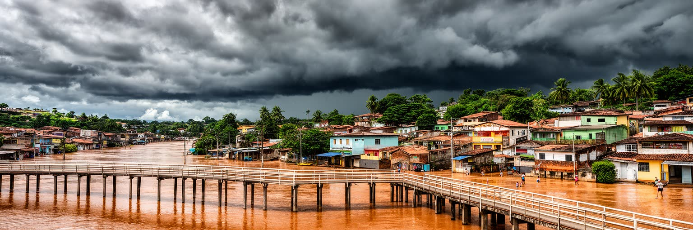
マナウスの暮らしは、暑熱と洪水のリズムに合わせて組み立てられます。気温と湿度が高い日は、通勤、屋外労働、学校、買い物、医療機関への移動が体力を奪い、冷房の有無が生活の質を大きく分けます。雨季には川の水位が上がり、低地や川辺の住宅、道路、市場、船着き場が浸水しやすくなります。水が引いた後も、泥、ゴミ、蚊、感染症、家財の損失、通学路の寸断が残ります。乾季には逆に水位低下で船の運航が難しくなり、物資輸送や河岸集落との往来が不安定になります。排水路の整備、住宅のかさ上げ、避難計画、保健所の対応、緑陰、公共施設の冷却、早期警報は、都市の生存インフラです。観光客にとって川の増水は珍しい景観かもしれませんが、住民にとっては家賃、修理費、仕事の欠勤、病気のリスクになります。暑さが和らぐ時間には、地区のサッカー、散歩、川辺のベンチ、教会の集まりが生活を支えます。子どもの登校、高齢者の通院、露店の仕入れは、水位と天気予報を見ながら決まります。マナウスの気候リスクは、自然の厳しさだけでなく、どの地区に排水と住宅投資が届くかという社会的な差によって増幅されます。暑さに耐える力は個人の根性ではなく、家の構造、街路樹、職場の安全、公共交通の待ち時間で決まります。川の都市では、水位表が生活カレンダーであり、天気予報が家計の予報にもなります。家の床を上げる工夫や近隣の助け合いも、公式な防災と同じくらい重要です。
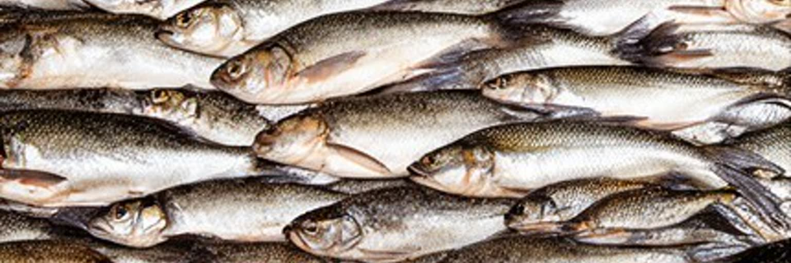
マナウスの食文化は、川と森の距離の近さをよく表しています。タンバキ、ピラルク、ジャラキなどの川魚は市場と食堂の主役で、焼く、煮る、揚げる、スープにするなど多様に食べられます。キャッサバから作るファリーニャ、トゥクピ、タカカ、アサイー、クプアス、トゥクマン、唐辛子、香草は、先住民の知識と河岸の暮らしを都市の食卓へ運びます。朝の市場では魚の大きさ、水揚げ、氷、船の到着、季節の果物が価格を決め、食は物流と環境の変化を敏感に映します。屋台、弁当売り、ジュース店、菓子の露店は、学生、港湾労働者、工場帰りの人、買い物客を支える街路経済です。週末には家族が市場やショッピングセンターを回り、川魚の昼食、衣料、携帯用品、学校用品を同じ外出でそろえます。食文化は地域の誇りである一方、乱獲、水質汚染、物価上昇、食品衛生、低賃金の厨房労働という課題も抱えます。マナウスで食べることは、アマゾンの自然を味わう行為であると同時に、その自然をどう保ち、誰の労働で食卓が成り立つのかを考える行為でもあります。市場のにおい、魚をさばく手つき、果物の色、湯気の立つスープ、雨上がりの土と油の匂いは、観光写真より正直に都市を語ります。味はマナウスの記憶であり、川の状態を知らせる日々の指標でもあります。季節の水位で魚種や価格が変わるため、食卓は川の変化を毎週受け取ります。
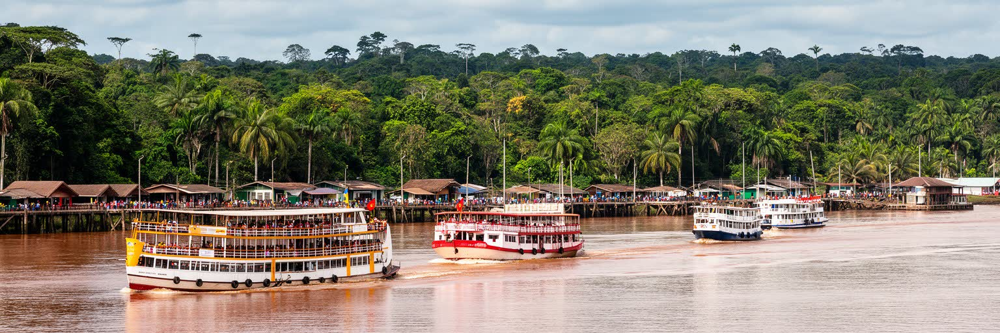
マナウス観光は、都市そのものと森への入口という二つの顔を持ちます。アマゾナス劇場、アドルフォ・リスボア市場、港、歴史地区、川沿いの風景は、ゴム景気と現在の生活を短い滞在で見せます。近郊ではネグロ川とソリモンエス川の合流、川船、淡水浜、熱帯雨林ロッジ、野生生物観察、先住民文化に触れるツアーが人気を集めます。ただし、森を訪れる旅は繊細でなければなりません。動物を見せ物にする観光、先住民文化の表層的な消費、廃棄物、過剰なボート運航は、魅力の源を傷つけます。良い観光は、地元ガイド、河岸コミュニティ、保全活動、文化の尊重に利益を返す必要があります。旅行者にとってマナウスは冒険の出発点に見えますが、住民にとっては生活都市であり、観光のための舞台ではありません。夜には広場の音楽、バー、ライブ、家族連れの外食、サッカー中継を流す店があり、観光客の時間と住民の余暇が重なります。六月祭や宗教行事、学校の発表、地域の試合も、都市を理解する小さな入口です。空港からロッジへ直行するだけでは、自由貿易区の労働、住宅地の拡大、港の物流、先住民の権利は見えにくいです。マナウスを旅する価値は、森の壮大さと都市の日常を切り離さずに見ることにあります。観光の収益が地域の案内人や保全へ戻るかどうかも、旅の質を分け、滞在の意味を深め続けます。